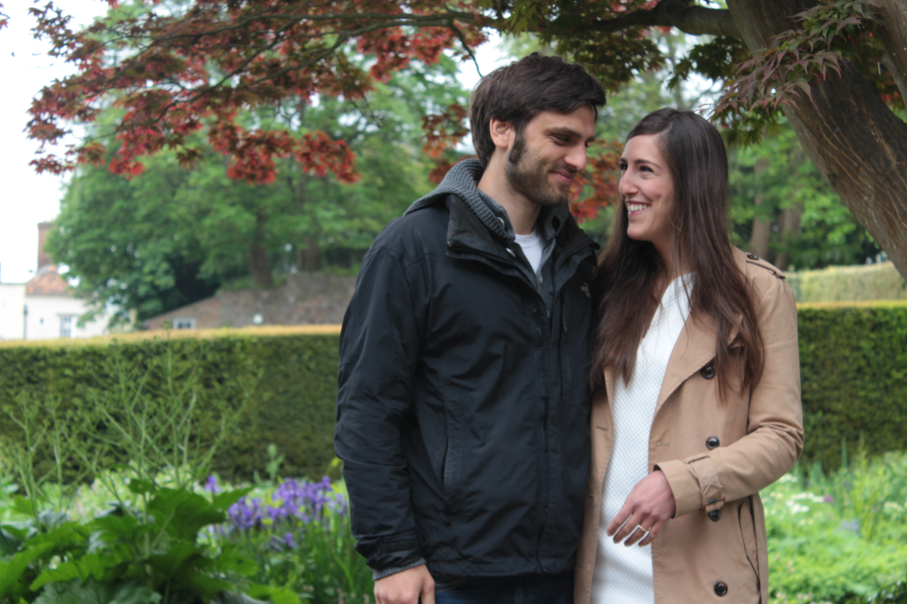

|
Start (Deutsch) Start (English) Heiraten mit xkcd |
(Page in English / Seite auf Englisch)
 AnfahrtWir werden 40 Parkplätze direkt vor der Orangerie Ansbach mieten, ansonsten kann man am Samstag Nachmittag auch auf dem Busparkplatz vor der Einfahrt der Orangerie parken. Wir empfehlen, dort zu parken und die ca. 500 Meter bis zur Kirche zu laufen, siehe Karte. Tagesprogramm
ca. 12:30 Wir chartern einen Bus, der Gäste ohne Auto von Fürth nach Ansbach bringt. Details geben wir noch bekannt!
GeschenkeHuhu ihr Lieben, der eine oder andere von euch macht sich sicherlich Gedanken, was für ein phänomenal einzigartiges Geschenk man uns machen könnte... um ehrlich zu sein, wenn ihr uns eine Freude machen wollt, dann lasst eure Kreativität an einer schönen Karte für uns aus und wer möchte, der legt uns dann noch etwas Flaches mit rein. Das wäre das schönste und nützlichste Geschenk für uns, neben eurer Anwesenheit natürlich ;) SonstigesNach der Hochzeit werden wir hier die Links zu Bildern des rauschenden Fests hochladen :) |